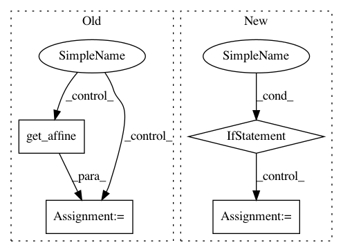

597894a02778c154fb31153666ac0a5db6b64826,nisl/resampling.py,,resample_img,#Any#Any#Any#Any#Any#Any#,100
Before Change
// noop cases
niimg = utils.check_niimg(niimg)
if copy:
niimg = Nifti1Image(niimg.get_data(), niimg.get_affine())
if target_affine is None and target_shape is None:
return niimg
After Change
niimg = utils.check_niimg(niimg)
if target_affine is None and target_shape is None:
if copy and not input_niimg_is_string:
niimg = utils.copy_niimg(niimg)
return niimg
shape = utils._get_shape(niimg)
affine = niimg.get_affine()
In pattern: SUPERPATTERN
Frequency: 3
Non-data size: 4
Instances
Project Name: nilearn/nilearn
Commit Name: 597894a02778c154fb31153666ac0a5db6b64826
Time: 2013-05-28
Author: philippe.gervais@inria.fr
File Name: nisl/resampling.py
Class Name:
Method Name: resample_img
Project Name: nilearn/nilearn
Commit Name: b7d99dc4d489ff2ec135606cbfa46ce0288fed21
Time: 2014-07-02
Author: gael.varoquaux@normalesup.org
File Name: nilearn/plotting/slicers.py
Class Name: BaseSlicer
Method Name: init_with_figure
Project Name: nilearn/nilearn
Commit Name: 1adf6bb44e1897757464394bcf7502de30278b16
Time: 2015-04-20
Author: abraham.alexandre@gmail.com
File Name: nilearn/_utils/niimg_conversions.py
Class Name:
Method Name: _iter_check_niimg